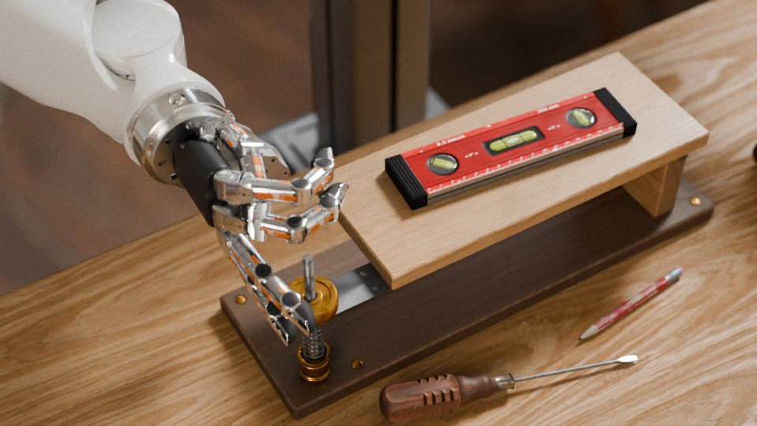

dashboard · all 50 tasks: trials and success rate · this task in the gallery · generated 2026-11-26 05:46 EST by python s2/s2loop/daily50_trials_page.py

Level the shelf: lay the level on it and turn the adjusting wheel until the bubble is centred.
the instruction S2 was given, read from the trial record (instruction)
FAIL best of 1 trial(s); 0 passed. First attempt (trial 113): FAIL. Not passed in any attempt so far. Played by session agents, probe series — not a counted test series.
written 2026-11-26 05:17 · attempt 1 · played without this task's notes · episode index 113 · 10 turns (1 plan, 1 look, 3 act, 5 replan) · 2604 ticks of 3000 used by the turns · run 20261126T095607Z-27e78331 · session daily50_t47-0335ab32
The record holds no new steps.
The record holds no new steps.
The record holds no new steps.
The record holds no new steps.
The record holds no new steps.
| turn | phase | skill | what S2 said it does and why | reply | ticks |
|---|---|---|---|---|---|
| 1 | LOOK | point_at x63 + | measure the shelf top, the wheel, the level, and ask the level's grasps (nothing moves) | ok | at 0no motion |
| 2 | PLAN | propose_grasps + | attach the level with its own-shape clip (hold s0), carry it level 37 cm onto the shelf top, detach, reach away; then fingertip strokes on the wheel until the board is level. This step checks and commits steps 1 to 3 | ok | at 0no motion |
| 3 | REPLAN | attach x7 + | the finger came 4 to 5 mm from the shelf at the put-down; sweep the place across and along the board and the end height, commit the first accepted plan (steps 1 to 3)reason: the finger came 4 to 5 mm from the shelf at the put-down; sweep the place across and along the board and the end height, commit the first accepted plan (steps 1 to 3) | ok | 0–83016.6 s |
| 4 | REPLAN | propose_grasps + | the level left the s0 grip in the carry and lies turned near the table edge; one retry with the firm hold: attach, carry with a -55 degree turn onto the board, detach, reach awayreason: the level left the s0 grip in the carry and lies turned near the table edge; one retry with the firm hold: attach, carry with a -55 degree turn onto the board, detach, reach away | ok | at 830no motion |
| 5 | REPLAN | attach x25 + | the grasp from the far side needs a 45 mm raise; try the same clip from the opposite side (psi 143) with the turn that lays the level along the board, commit the first accepted planreason: the grasp from the far side needs a 45 mm raise; try the same clip from the opposite side (psi 143) with the turn that lays the level along the board, commit the first accepted plan | ok | at 830no motion |
| 6 | REPLAN | touch x14 + | the level has no feasible policy grasp where it lies (raise limit, IK); do the wheel half: one fingertip arc stroke on the wheel top (clockwise 270 degrees first), then reach away to read the board's tiltreason: the level has no feasible policy grasp where it lies (raise limit, IK); do the wheel half: one fingertip arc stroke on the wheel top (clockwise 270 degrees first), then reach away to read the board's tilt | ok | at 830no motion |
| 7 | REPLAN | touch x12 + | the fingertip came 2 to 4 mm from the wheel's raised middle; move the arc out to the rim (radius 20 to 27 mm), clockwise 270 degrees, commit the first accepted, reach awayreason: the fingertip came 2 to 4 mm from the wheel's raised middle; move the arc out to the rim (radius 20 to 27 mm), clockwise 270 degrees, commit the first accepted, reach away | ok | at 830no motion |
| 8 | ACT | point_at x8 + | touch arcs are all refused for millimetres at the wheel; use the old verb guarded_press as a directed fingertip push on the wheel's near rim (tangent, clockwise, two presses), then move away open and read the board's tilt | not okik_unreachable | 830–134710.3 s |
| 9 | ACT | point_at x21 + | two rim pushes took 5 of the 14 mm of tilt out; three more, read the tilt, then one scaled push for the rest, move away open and read the tilt again | ok | 1347–191911.4 s |
| 10 | ACT | point_at x35 + | the three pushes did nothing (the wheel top sank with the board, the finger passed over it); re-aim each push at the wheel's present height, read the tilt after each, stop when level; then open hand and move away (the ending) | ok | 1919–260413.7 s |
Ticks: the tick range the turn moved the robot over (one tick is 20 ms). ▶ m:ss under a turn number is where that turn starts in the video; click a row to go there.
| skill | ok | the skill's own verification (head camera, joint and servo effort) | what the record showed afterwards |
|---|---|---|---|
| commit_plan | ok | — | |
| guarded_press | not ok | — | |
| guarded_press | ok | — | |
| move_to_pose | ok | — | |
| guarded_press | ok | — | |
| move_to_pose | ok | — | |
| guarded_press | ok | — | |
| guarded_press | ok | — | |
| guarded_press | ok | — | |
| move_to_pose | ok | — |
NOTES.md)# t47_level_shelf notes (append-only: one dated line per lesson, only what the head camera and the skill replies showed) - 2026-11-26 05:17 (t47_level_shelf, attempt 1, FAIL): The 20x5x1.4 cm level taken with its own-shape recorded clip (rect12) under hold s0 left the hand in the 37 cm carry (grip loaded in 14 of 26 samples) and lay turned 50 degrees at the table's near edge; there both hand turns of the bound clip were refused (45 mm raise needed; IK misses the clip's wrist path): the first attach is the only one, so try the default firm hold and look at the level before counting on it. - 2026-11-26 05:17 (t47_level_shelf, attempt 1, FAIL): Put-down on the board: with the level's centre 1.5 to 3 cm above the board top the ring/little fingertip is 4 to 5 mm from the shelf and the carry is refused; accepted was a centre height 4.3 cm above the board top at 1.5 cm toward the far side of the board's middle line (680 rows). - 2026-11-26 05:17 (t47_level_shelf, attempt 1, FAIL): The wheel turns by fingertip pushes along its tangent: guarded_press at a point 15 mm on the robot side of the wheel's centre and 8 mm before it, direction (0, 0.98, -0.2) (toward the board, clockwise seen from above), max_travel 0.025, guard 0.5: one full push took about 20 mm/m (1.1 degrees) of the board's tilt out, and the wheel end comes DOWN with clockwise pushes. A steeper direction (-0.34) was out of reach; touch(Pose, posture=point, then=arc) on the wheel top was refused at every radius from 11 to 27 mm for a fingertip link 2 to 5 mm from the wheel. - 2026-11-26 05:17 (t47_level_shelf, attempt 1, FAIL): The wheel's top sinks with the board (about 7 mm for the first 20 mm/m of tilt): three pushes aimed at the first-seen height passed over it and did nothing; re-aim every push at the present height (first top height minus tilt change times 0.35 m) 2 mm into it, read the tilt after each push with point_at along the board (seen whole with the hand at the press hover), and shorten the last push: 52 -> 33 -> 13 -> 7 -> 1.8 mm/m here. - 2026-11-26 05:17 (t47_level_shelf, attempt 1, FAIL): Ticks: level pick-carry-place 830, the wheel 1774 including one wasted 3-push call; with re-aimed single pushes from the start the wheel needs about 5 pushes (about 600 to 700 ticks with the move away), which leaves room for the level.